Luna and the Moonlight Garden
A Magical Adventure
Written by
Hamidreza Rostami
Luna and the Moonlight Garden
Written by Hamidreza Rostami
Copyright © 2026 Hamidreza Rostami
All rights reserved.
Buyer has usage rights only.
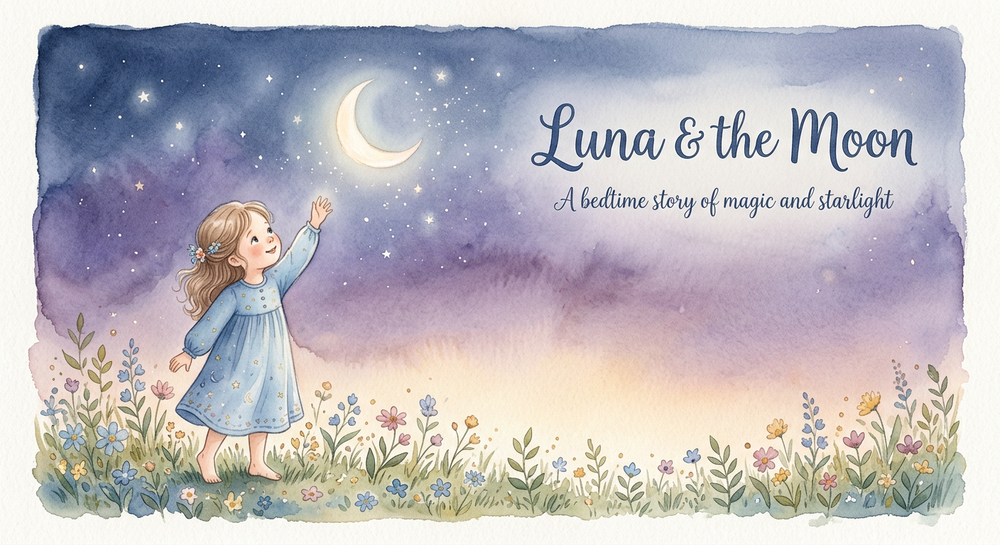
Luna loved her grandmother's garden. She loved the roses that climbed the trellis, the daisies that danced in the breeze, and the sunflowers that stood tall like soldiers.
But most of all, Luna loved the stories her grandmother told about the Moonlight Garden—a magical place that only appeared when the moon was full and high.
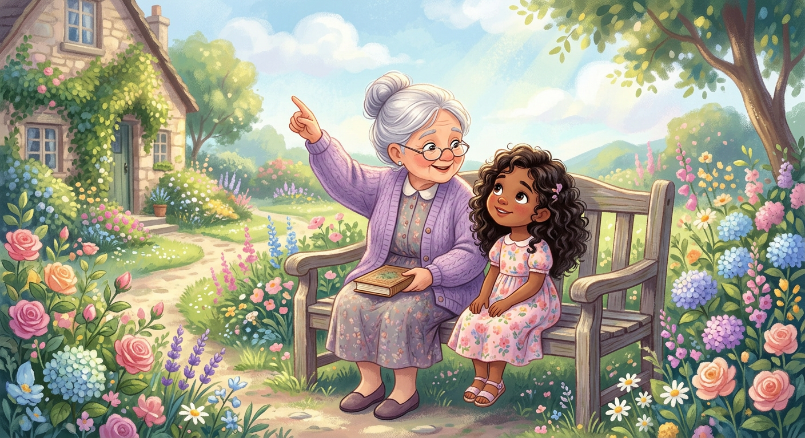
"It's just a story, Grandma," Luna would say, though she secretly hoped it was real.
"Oh, it's real," Grandma would whisper. "But only for those who know how to look."
One evening, as Luna lay in bed, she saw the full moon shining through her window. It was round and bright, like a silver coin.
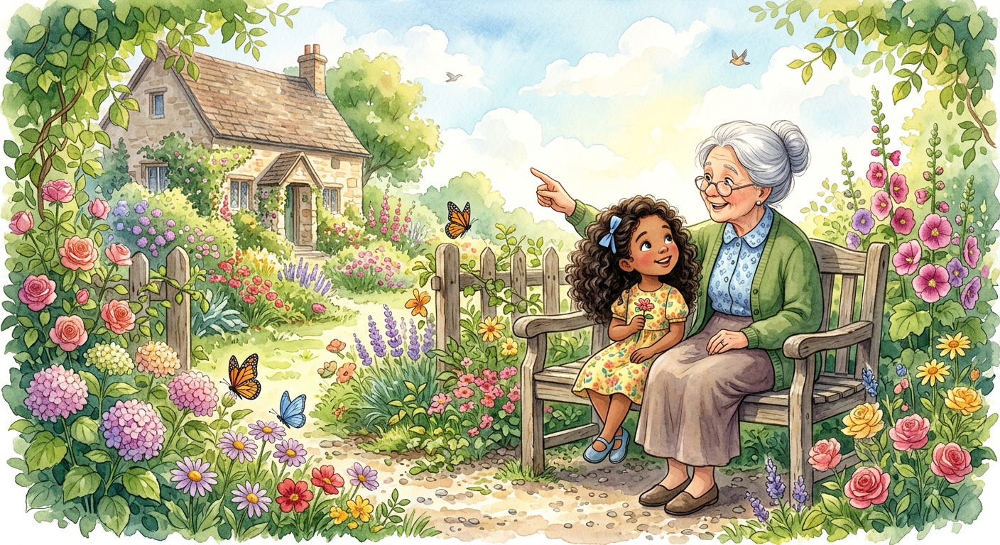
She tiptoed downstairs and out into the garden. The air was cool and smelled of jasmine.
But something was different.
The garden was... glowing.
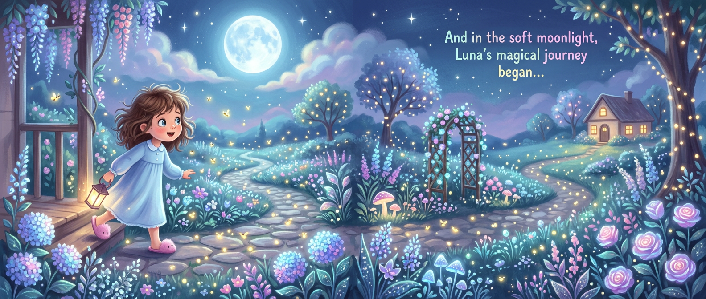
The roses shimmered like they were dusted with stardust. The daisies pulsed with a gentle light. Even the grass sparkled like a field of tiny stars.
Luna gasped. "The Moonlight Garden!"
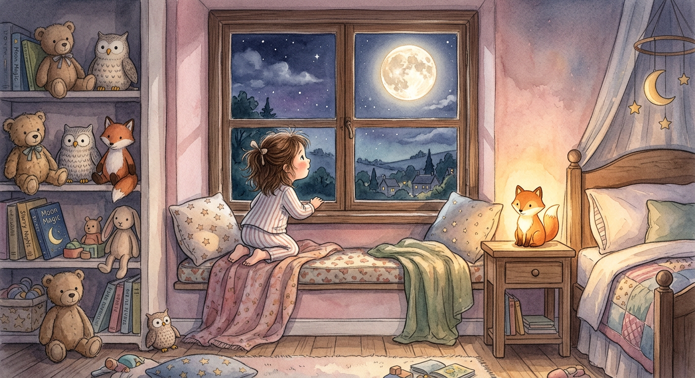
As she walked deeper into the garden, Luna noticed the plants were moving. Not in the wind—in a dance.
The sunflowers bowed to her. The daisies twirled. The roses swayed like they were listening to music only they could hear.

Then she heard it. A soft, sweet sound. Like chimes. Like whispers. Like... laughter.
The laughter came from a small, silver door that had appeared at the base of the old oak tree. It was no bigger than Luna's hand, with a tiny brass knob.
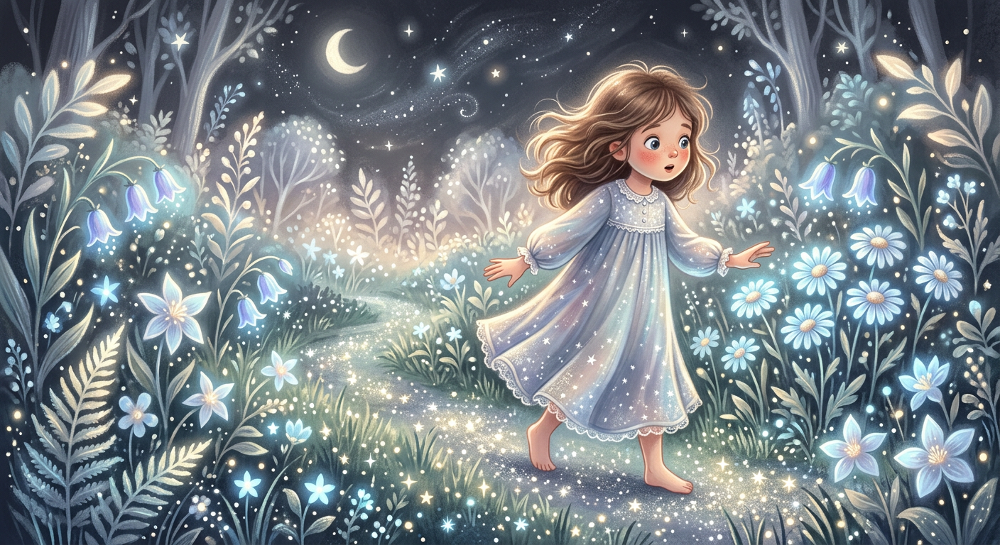
Luna knelt down and gently turned the knob. The door creaked open, and out stepped... a ladybug.
But not just any ladybug. This one had wings that shimmered like moonbeams, and she wore a tiny crown of petals.
"Hello, Luna," the ladybug said, as if they were old friends. "We've been waiting for you."
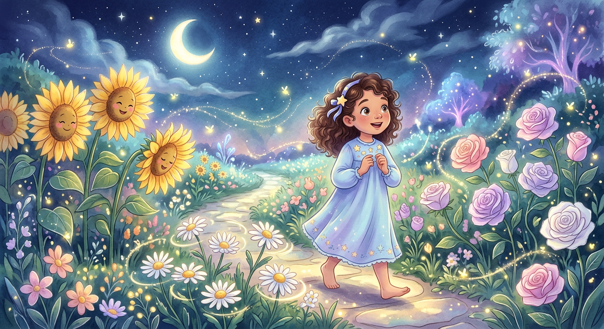
"Waiting for me?" Luna whispered.
"Of course!" said the ladybug. "The Moonlight Garden only appears for those with curious hearts. And yours, Luna, is the most curious of all."
She fluttered her wings. "Come. There's so much to see."
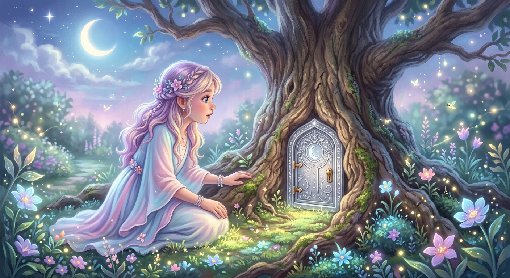
The ladybug led Luna through the garden. They met a family of fireflies who put on a light show. They watched butterflies with crystal wings sip nectar from glowing flowers.
They even found a pond where the water was so clear, it reflected the stars—and the stars winked back.
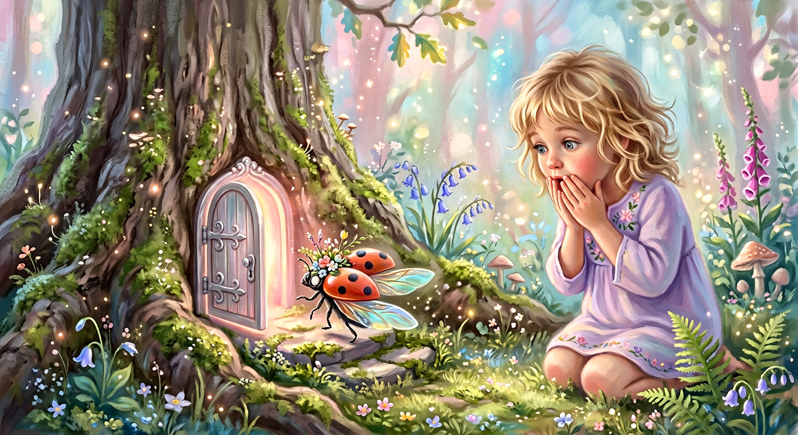
At the center of the garden stood a great silver tree. Its branches stretched wide, and its leaves were made of pure moonlight.
"This is the Heart Tree," said the ladybug. "It keeps the magic of the Moonlight Garden alive."
But Luna noticed something. One of the branches was bare. The leaves had fallen, and the branch looked sad.
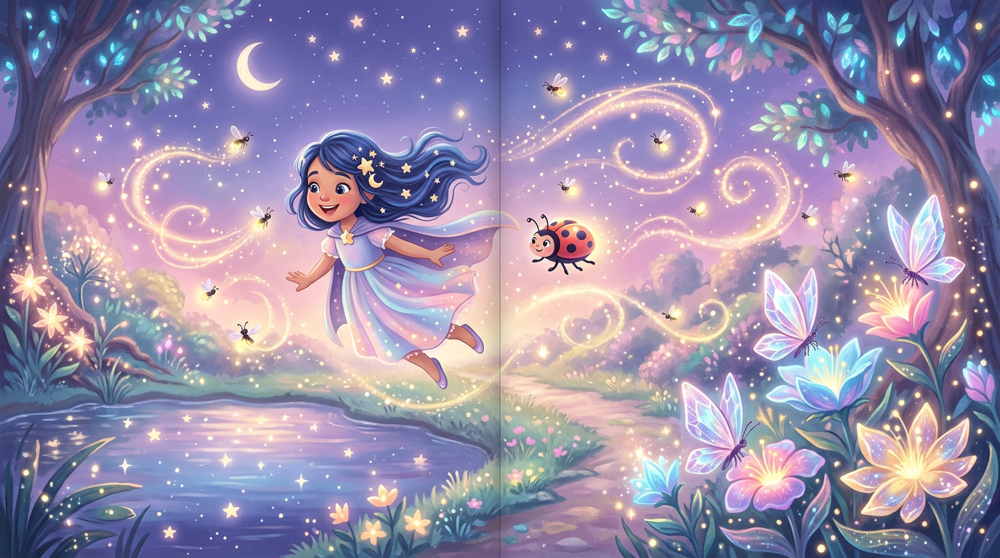
"What happened here?" Luna asked.
"The branch lost its belief," the ladybug said. "Without belief, the magic fades."
Luna reached out and gently touched the bare branch. "I believe in you," she whispered.
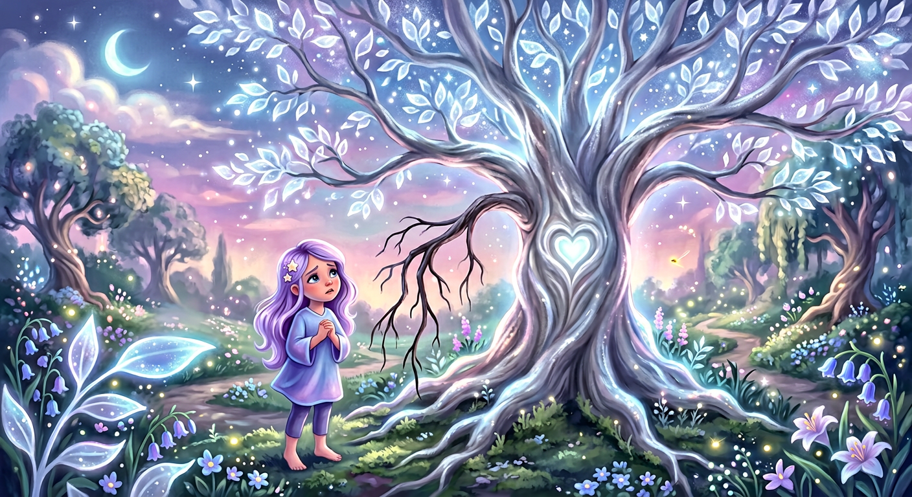
A soft glow began to spread from Luna's fingers. The branch shivered. Then, slowly, a new leaf appeared.
It was small at first, then bigger. And brighter. Soon, the whole branch was covered in beautiful, shimmering leaves.
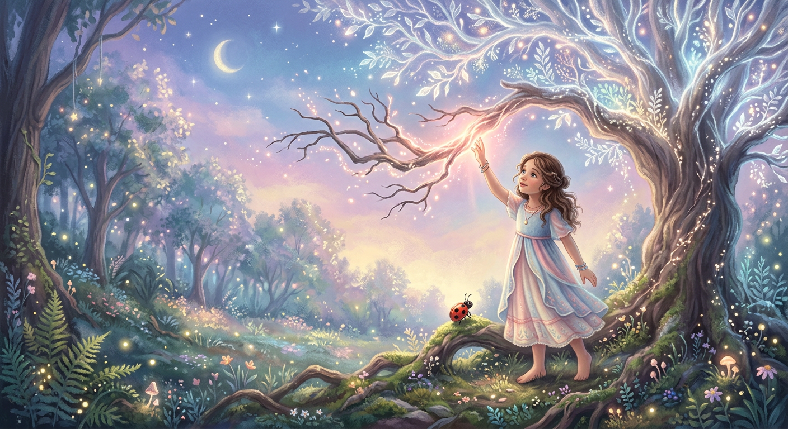
The Heart Tree swayed happily. The whole garden seemed to sigh with relief.
"You did it, Luna," said the ladybug. "You brought the magic back."
Luna smiled. "But it wasn't just me. It was all of us believing together."
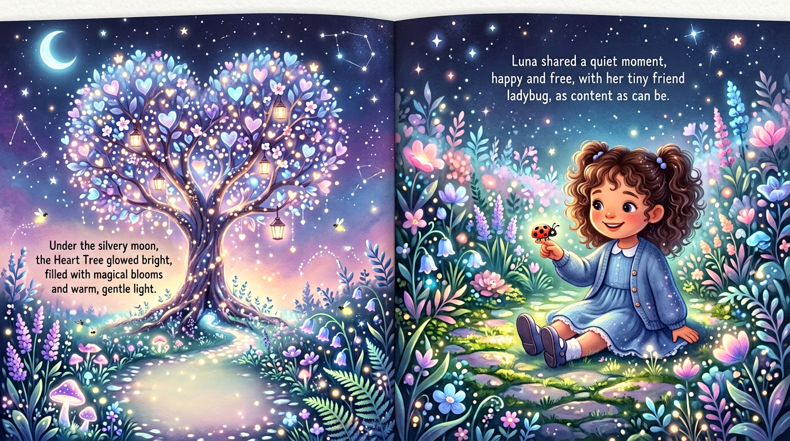
As the first light of dawn touched the garden, the magic began to fade. The glow softened. The dancing slowed.
The ladybug fluttered to Luna's shoulder. "Until next time, curious one."
Luna waved as the Moonlight Garden slowly disappeared. But she knew one thing for sure—she would always believe in magic.